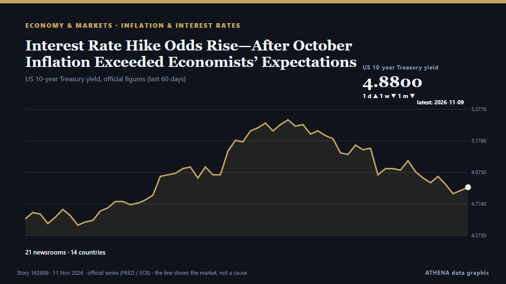

Interest Rate Hike Odds Rise—After October Inflation Exceeded Economists’ Expectations

With another month of higher numbers for consumer prices, it seems likely the Federal Reserve will raise interest rates in December. από Forbes Business
Αναφέρθηκε ανεξάρτητα από 21 μέσα σε 14 χώρες από τις 6 Νοε, πρώτο το Business Daily Africa· η κάλυψη εξασθενεί. Το ATHENA εκτιμά τον κίνδυνο μέτριο (2.7/10), κυρίως λόγω της σοβαρότητάς του και της εμβέλειάς του. Βεβαιότητα 85% (υψηλή): το επιβεβαιώνουν 21 ανεξάρτητα μέσα, μέση αξιοπιστία 72%. Μέσα ανά χώρα: Ηνωμένες Πολιτείες (7), Βραζιλία (6), Ηνωμένο Βασίλειο (3). Κάλυψη: 6 Νοε έως 11 Νοε, 110 ώρες.
Γιατί έχει σημασία: Οι κεντρικές τράπεζες ορίζουν την τιμή του χρήματος· οι αποφάσεις τους για τα επιτόκια κινούν νομίσματα, ομόλογα, στεγαστικά δάνεια και χρηματιστήρια σε όλο τον κόσμο.
Τι άλλαξε: 11 νέες αναφορές από 10 μέσα στο 24ωρο έως 11 Νοε.
Πρώτη διατύπωση: US job growth exceeds expectations in October despite economic uncertainty
Οι τίτλοι των ειδήσεων παρουσιάζονται στα αγγλικά, όπως δημοσιεύτηκαν.
Πώς να διαβάσετε αυτή τη σελίδα
- Τι διαβάζετε
- 21 μέσα σε 14 χώρες ανέφεραν αυτό το γεγονός. Οι αναφορές παρακάτω εμφανίζονται με τη σειρά που δημοσιεύτηκαν· κάθε τίτλος ανοίγει το αρχικό άρθρο. Το ATHENA δεν γράφει δικά του ρεπορτάζ.
- Η εκτίμησή μας
- Για την καταγραφή — Οι αναφορές περιγράφουν ένα ολοκληρωμένο, εσωτερικό, εμπορικό ή προσωπικό ζήτημα. Το καταγράφουμε ώστε να βλέπετε ποιος το ανέφερε και πότε. Δεν παρακολουθούμε εδώ κίνδυνο ευρύτερης σύγκρουσης.
- Πόσα στοιχεία υπάρχουν
- Επαρκής Αρκετά ανεξάρτητα μέσα συμφωνούν, αλλά η εικόνα μπορεί ακόμη να αλλάξει.
Αφού αφαιρεθούν οι επαναλήψεις, τα άσχετα και τα παλιά στοιχεία, υπολογίζονται 16 από τις 30 αναφορές που παρατίθενται· το 77% των τίτλων αντιστοιχεί στο γεγονός.
- Τι δεν σημαίνει
- Το ATHENA μετρά πώς καλύπτεται ένα γεγονός, όχι αν είναι αληθές. Δεν είναι πρόβλεψη, κρίση για το ποιος έχει δίκιο ή συμβουλή.
- Τι θα την άλλαζε
- Αναφορές από άλλα ανεξάρτητα μέσα που δείχνουν διαφορετική εξέλιξη, ή σαφής επιβεβαίωση ή διάψευση από επίσημη πηγή.
Εκτίμηση R2 · ανανεώνεται με κάθε ενημέρωση της σελίδας. Το ATHENA δεν έχει δημοσιεύσει ακόμη ιστορικό επιδόσεων για αυτές τις εκτιμήσεις· όταν το κάνει, θα συνδέεται εδώ.
Με μια ματιά
Επιλέγεται, βαθμολογείται και γράφεται από τη δημοσιευμένη μεθοδολογία του ATHENA. Κανένας συντάκτης δεν παρεμβαίνει σε μεμονωμένα γεγονότα. Πώς παράγεται ›
| 06 Nov 10:00 UTC | 5 |
|---|---|
| 06 Nov 16:00 UTC | 4 |
| 06 Nov 22:00 UTC | 1 |
| 07 Nov 04:00 UTC | 1 |
| 07 Nov 10:00 UTC | 0 |
| 07 Nov 16:00 UTC | 1 |
| 07 Nov 22:00 UTC | 1 |
| 08 Nov 04:00 UTC | 1 |
| 08 Nov 10:00 UTC | 2 |
| 08 Nov 16:00 UTC | 0 |
| 08 Nov 22:00 UTC | 1 |
| 09 Nov 04:00 UTC | 1 |
| 09 Nov 10:00 UTC | 1 |
| 09 Nov 16:00 UTC | 2 |
| 09 Nov 22:00 UTC | 0 |
| 10 Nov 04:00 UTC | 0 |
| 10 Nov 10:00 UTC | 3 |
| 10 Nov 16:00 UTC | 6 |
| 10 Nov 22:00 UTC | 2 |
Γιατί αυτοί οι αριθμοί
Σημασία
Κίνδυνος
Βεβαιότητα
Η κάλυψη — ποιος το ανέφερε και πότε
ο τίτλος όπως δημοσιεύτηκε · ανοίγει το πρωτότυπο- Business Daily Africa · ΚένυαUS investors raise Kenya portfolio holdings to four-year high
- The Guardian · Ηνωμένο ΒασίλειοUS job growth exceeds expectations in October despite economic uncertainty
- investingLive (ForexLive) · INTUSD moves higher after the US jobs report. What levels are in play now?
- Nikkei Asia · ΙαπωνίαSingapore banks struggle with bond yield and interest rate tensions
- HousingWire · Ηνωμένες ΠολιτείεςOctober jobs report strengthens case for December rate hike
- Forbes Business · Ηνωμένες ΠολιτείεςOctober Saw Better-Than-Expected Job Growth—But 339,000 More People Are Working Part-Time Who Wanted Full-Time Roles
- PBS NewsHour · Ηνωμένες ΠολιτείεςU.S. continues to generate jobs, yet inflation is eroding Americans' spending power
- FXStreet · ΙσπανίαFed’s Daly says jobs data gives room for tightening policy
- Military Times · Ηνωμένες ΠολιτείεςOctober surge in hiring lowers veterans’ unemployment to 2.7%
- PBS NewsHour · Ηνωμένες ΠολιτείεςWhat to know about a better-than-expected jobs report amid AI bubble concerns
- The Rio Times · ΒραζιλίαUS Adds 165,000 Jobs as Dollar and Yields Rise | Global Economy, Nov 7
- The Rio Times · ΒραζιλίαBrazil Rate-Cut Plan Draws Currency Warning
- Wolf Street · Ηνωμένες ΠολιτείεςWould Be a Worrisome Sign for the Bond Market if Treasury Yields Turn Higher Next Week
- The Rio Times · ΒραζιλίαBradesco and XP Cut Brazil’s 2027 Growth
- BusinessWorld · ΦιλιππίνεςRates of bills, bonds may rise as market weighs economic risks
- The Rio Times · ΒραζιλίαBrazil Interest Rate Cuts Stall on US Yields
- Naftemporiki (English) · ΕλλάδαNew measures to protect borrowers and debtors: 3% interest rate and 120 instalments
- BusinessWorld · ΦιλιππίνεςDebt yields climb further as high inflation bolsters rate hike bets
- FXStreet · ΙσπανίαDollar still has room higher into early 2027
- Mexico News Daily · ΜεξικόMexico’s inflation rate rises for third straight month, hitting 3.75%
- FXStreet · ΙσπανίαFed's Waller calls for higher interest rates to curb inflation
- Anadolu Agency (English) · ΤουρκίαUS Treasury yields jump after stronger-than-expected inflation, Fed rate hike signals
- The Rio Times · ΒραζιλίαBrazil Rates Stay High as Inflation Resists
- Forbes Business · Ηνωμένες ΠολιτείεςInterest Rate Hike Odds Rise—After October Inflation Exceeded Economists’ Expectations
- Global News (World) · ΚαναδάςRed hot U.S. inflation reading dials up interest rate worries on markets
- The Rio Times · ΒραζιλίαBrazil’s Central Bank Sees 5.6% Inflation
- ABC News Australia · ΑυστραλίαBuyers ditch backyards for balconies as rates rise
- The Age · ΑυστραλίαCBA’s late mortgage payments tick up as interest rate rises bite
- Belfast Telegraph · Ηνωμένο ΒασίλειοInterest rates should rise to 5% to control inflation, says think tank
- The Irish News (Belfast) · Ηνωμένο ΒασίλειοInterest rates should rise to 5% to control inflation, says think tank